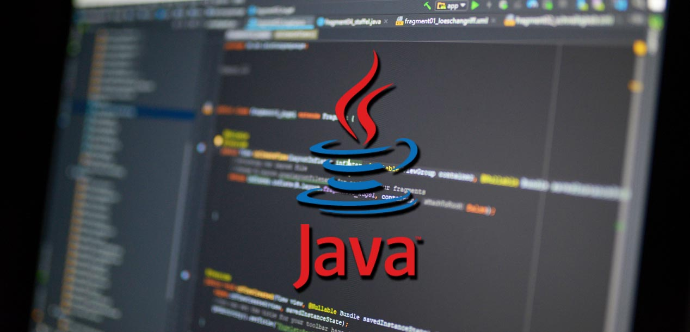
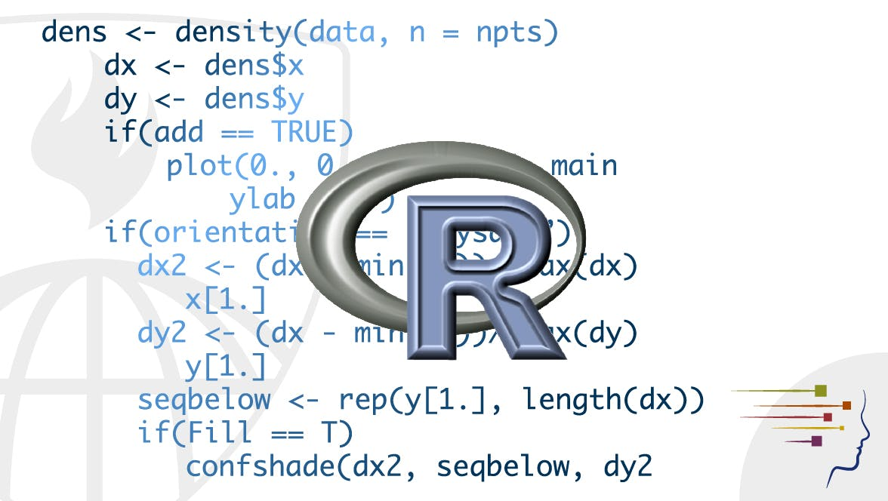

Python é uma linguagem de programação de alto nível, interpretada de script, imperativa, orientada a objetos, funcional, de tipagem dinâmica e forte.
Java

O Java é a principal linguagem de programação e plataforma de desenvolvimento.
C#
C# (CSharp) é uma linguagem de programação orientada a objetos criada pela Microsoft, faz parte da sua plataforma . Net. A companhia baseou C# na linguagem C++ e Java. C# (CSharp) é uma linguagem de programação orientada a objetos criada pela Microsoft, faz parte da sua plataforma
R

R é uma linguagem de programação multi-paradigma orientada a objetos, programação funcional, dinâmica, fracamente tipada, voltada à manipulação, análise e visualização de dados.